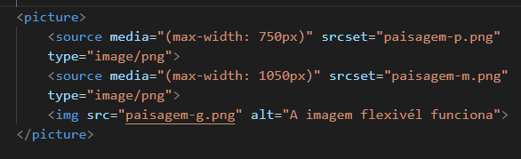
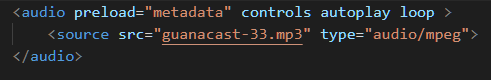

Nosso primeiro passo no caminho de adaptar nosso conteúdo ao tamanho da tela
vai ser aprender a gerar imagens de tamanho diferentes e a fazer o navegador carregar
a imagem certa para cada situação. Para isso,
devemos conhecer as tags <picture> e <source>.
Para esse exemplo, criamos as três imagens: a menor tem 300x300px, a média tem 700x700px
e a maior tem 1000x1000px.
Usamos o programa GIMP, que é um editor de imagens 100%
gratuito.
Essas imagens serão carregadas pelo navegador de acordo com o tamanho da janela atual.
Para isso, criamos o seguinte código base:

Com a HTML5, veio também a facilidade em compartilhar áudio nos nossos sites e
sem depender necessariamente de JavaScript ou plugins extras.
A partir de agora, basta uma tag <audio> e alguns <source>
para fazer seu site ser capaz de tocar qualquer áudio.
Vamos aprender a reproduzir áudios em HTML5.
Veja o trecho do código abaixo

Vamos analisar os principais atributos da tag <audio> antes de mais nada:
Dentro da tag <audio>, adicionamos vários <source> com formatos diferentes do
mesmo áudio.
Coloque na parte de cima o seu formato favorito. Os demais só serão carregados caso o de cima falhe.
Caso todos falhem, criamos um parágrafo que permite o download do arquivo MP3
para ouvir no player padrão do dispositivo.
Para inserir um vídeo em nosso site, podemos utilizar a nova
tag <video> da HTML5,
caso o arquivo esteja hospedado no nosso próprio servidor.
Antes de mais nada, vamos criar a tag <video> e configurar
alguns atributos importantes:
Arquivos de vídeo não são tão simples quanto imagens e
áudios, onde o formato indica o padrão para abrir e
reproduzir a mídia.
Vídeos possuem formatos e codecs e
isso pode tornar o vídeo inviável de ser reproduzido
pela maioria dos navegadores na maioria dos dispositivos.
É preciso prestar muita atenção nesse pequeno detalhe
Os formatos suportados são MPEG, WEBM e OGV, mas os
dois primeiros
são os que possuem maior compatibilidade
com os navegadores atualmente.